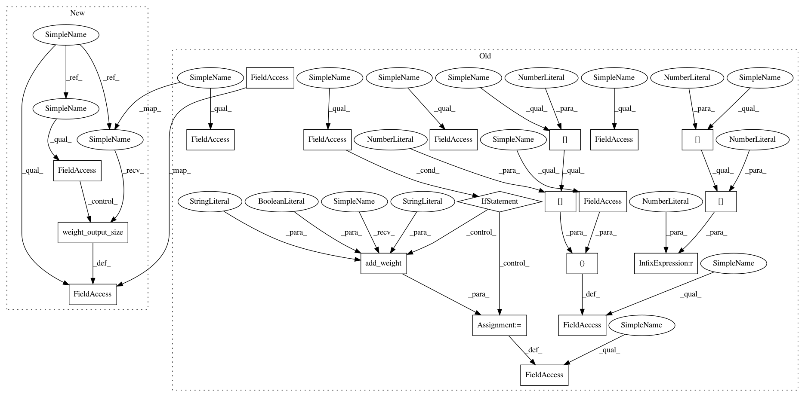

90c4c1e7dc3c3801fa7f62f17cf0ed83215028a5,stellargraph/layer/graphsage.py,MeanAggregator,build,#MeanAggregator#Any#,166
Before Change
and neighbour
if input_shape[1][2] > 0:
self.w_neigh = self.add_weight(
name="w_neigh",
shape=(input_shape[1][3], self.half_output_dim),
initializer=self._initializer,
trainable=True,
)
else:
self.w_neigh = None
self.w_self = self.add_weight(
name="w_self",
shape=(input_shape[0][2], self.half_output_dim),
initializer=self._initializer,
trainable=True,
)
if self.has_bias:
self.bias = self.add_weight(
name="bias",
shape=[self.output_dim],
initializer="zeros",
trainable=True,
)
super().build(input_shape)
def aggregate_neighbours(self, x_neigh):
from_neigh = K.dot(K.mean(x_neigh, axis=2), self.w_neigh)
After Change
def build(self, input_shape):
Builds layer
Args:
input_shape (list of list of int): Shape of input tensors for self
and neighbour
super().build(input_shape)
if self._build_mlp_only:
self.w_neigh = None
else:
self.w_neigh = self.add_weight(
name="w_neigh",
shape=(input_shape[1][3], self.weight_output_size()),
initializer=self._initializer,
trainable=True,
)
In pattern: SUPERPATTERN
Frequency: 3
Non-data size: 20
Instances
Project Name: stellargraph/stellargraph
Commit Name: 90c4c1e7dc3c3801fa7f62f17cf0ed83215028a5
Time: 2019-01-22
Author: andrew.docherty@data61.csiro.au
File Name: stellargraph/layer/graphsage.py
Class Name: MeanAggregator
Method Name: build
Project Name: stellargraph/stellargraph
Commit Name: 90c4c1e7dc3c3801fa7f62f17cf0ed83215028a5
Time: 2019-01-22
Author: andrew.docherty@data61.csiro.au
File Name: stellargraph/layer/graphsage.py
Class Name: MeanAggregator
Method Name: build
Project Name: stellargraph/stellargraph
Commit Name: 90c4c1e7dc3c3801fa7f62f17cf0ed83215028a5
Time: 2019-01-22
Author: andrew.docherty@data61.csiro.au
File Name: stellargraph/layer/graphsage.py
Class Name: MaxPoolingAggregator
Method Name: build
Project Name: stellargraph/stellargraph
Commit Name: 90c4c1e7dc3c3801fa7f62f17cf0ed83215028a5
Time: 2019-01-22
Author: andrew.docherty@data61.csiro.au
File Name: stellargraph/layer/graphsage.py
Class Name: MeanPoolingAggregator
Method Name: build